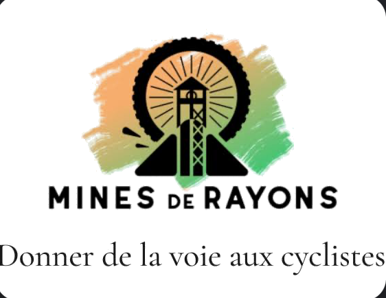
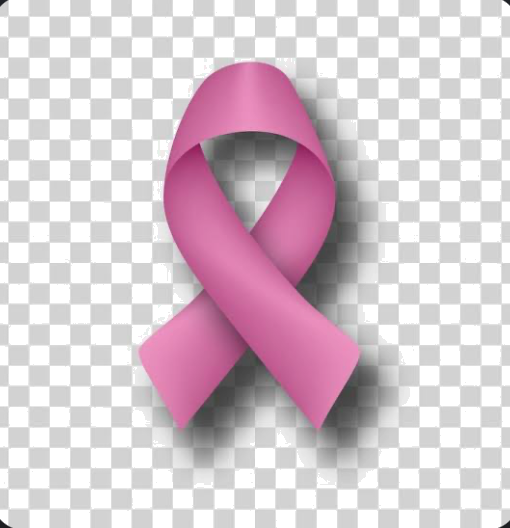
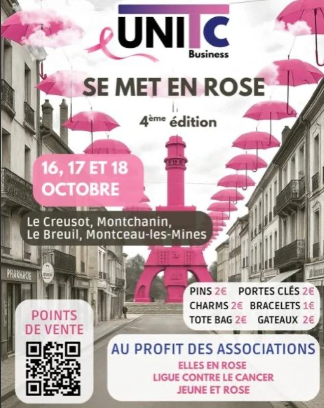
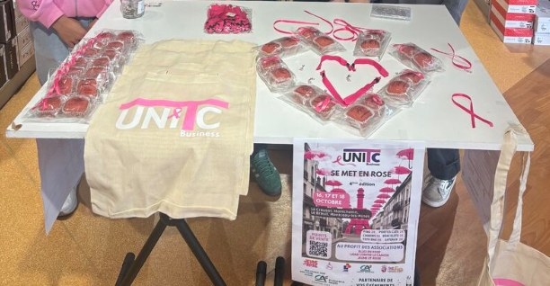
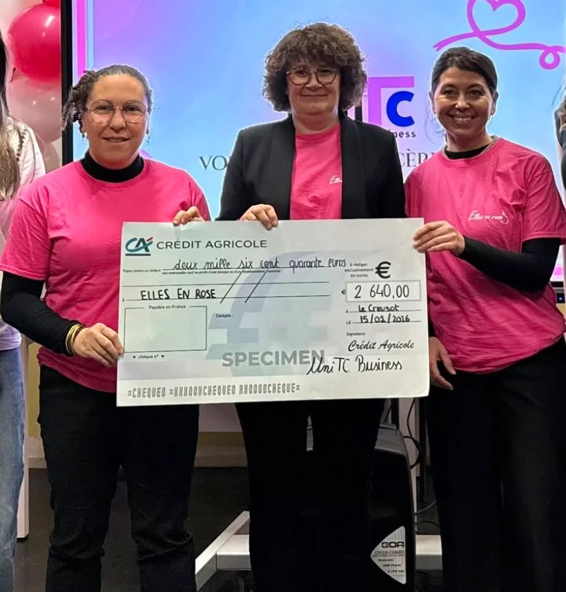
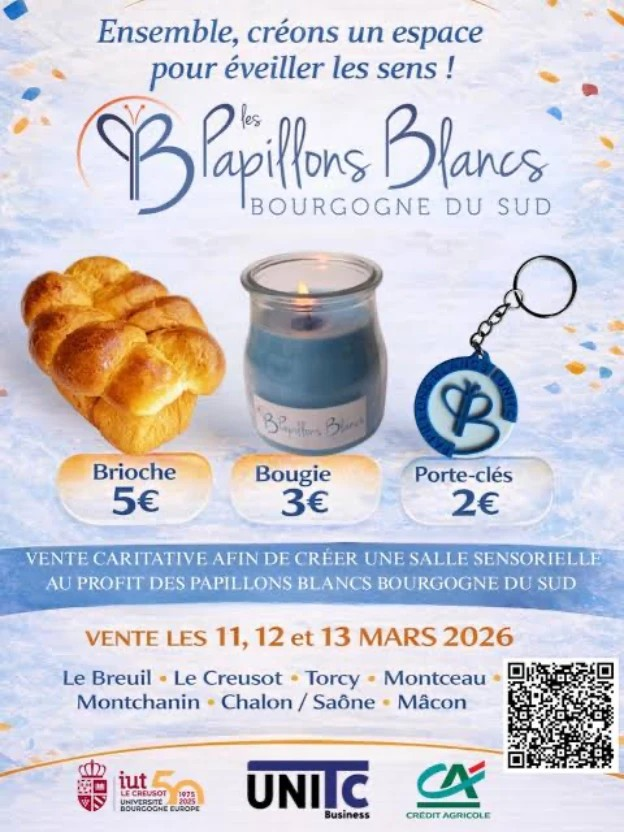
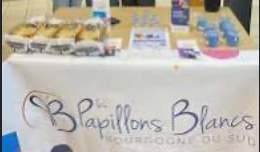
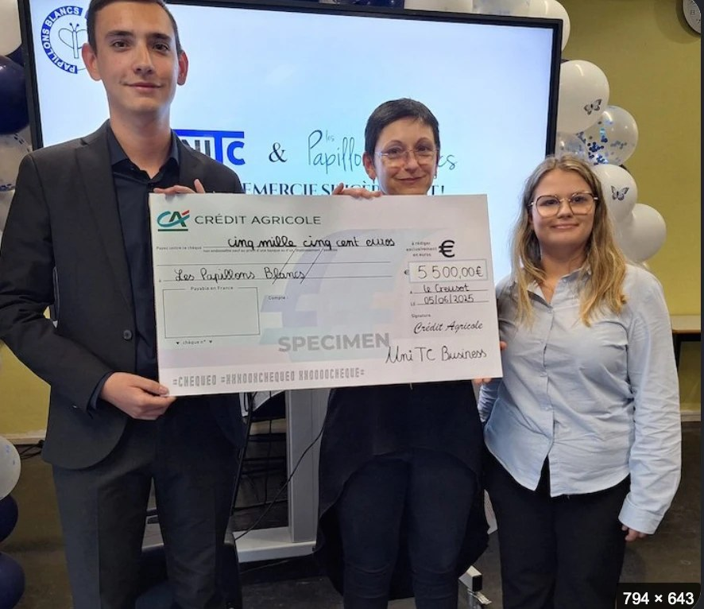
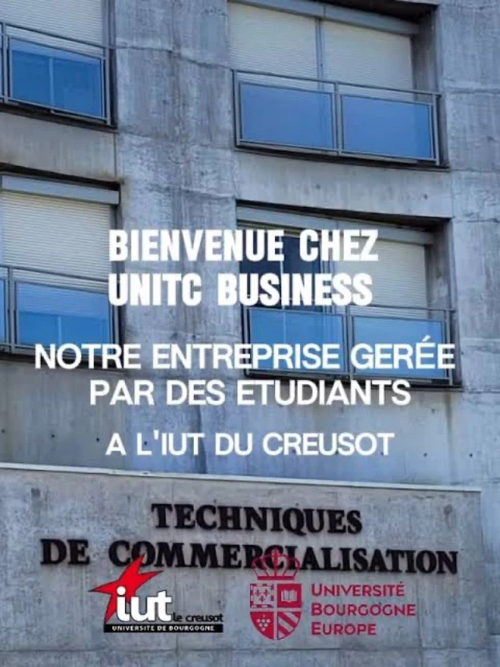

05 — Vie professionnelle
Expériences
Distinctes des projets scolaires — le terrain, en entreprise.
5
Expériences terrain
3
Projets UniTC Business
4
Semaines de stage IUT
Parcours professionnel
Stages & jobs
Du collège à aujourd'hui — chaque expérience a nourri mon projet professionnel.
Animateur stagiaire
Centre de Loisirs et de Jeunesse — Le Breuil
Missions
Animation et encadrement d'enfants pendant les activités du centre de loisirs.
Compétences développées
Prise de responsabilité, sens du contact et de l'écoute, gestion d'un groupe.
Ce que ça m'a apporté
Une première expérience de terrain et le goût du relationnel, avant même le BUT TC.
Stagiaire observateur
Cabinet d'architecte — Torcy
Missions
Découverte du fonctionnement d'un cabinet d'architecte et de ses différents projets.
Compétences développées
Observation d'un environnement professionnel, rigueur et sens du détail.
Ce que ça m'a apporté
Une ouverture sur un secteur différent du commerce, utile pour affiner mes choix d'orientation.
Conseiller de vente
Espace SFR — Le Creusot
Missions
Accueil et conseil client, vente et présentation des offres et produits en boutique.
Compétences développées
Techniques de vente et de conseil, argumentation commerciale, relation client en direct.
Ce que ça m'a apporté
Une mise en pratique concrète des bases de vente vues en cours de BUT TC.
Employé mise en rayon
Leclerc — Le Breuil
Missions
Mise en rayon, gestion des stocks et de la présentation des produits en grande distribution.
Compétences développées
Rigueur, organisation, rythme de travail en équipe.
Ce que ça m'a apporté
Une bonne compréhension du fonctionnement concret d'un point de vente en grande distribution.
Organisateur d'événement
Mairie
Missions
Organisation logistique d'une soirée : installation des tables et des chaises, mise en place de la salle.
Compétences développées
Sens de l'organisation, travail en équipe, respect des délais.
Ce que ça m'a apporté
Une première expérience d'organisation événementielle, à petite échelle.
Vie associative
Actions UniTC Business
Organisées par les étudiants du BUT TC, pendant l'école — clique pour le détail.

Entreprise-école — BUT TCUniTC Business
Mon projet : Mines de Rayons — TC1
Voir le détail →
Action solidaire — UniTC BusinessOctobre Rose
Vente sur points de vente — TC1
Voir le détail →Papillons Blancs
Vente sur points de vente — TC1
Voir le détail →Action solidaire · UniTC Business
Octobre Rose
Chaque année, les étudiants en BUT TC de l'IUT du Creusot organisent l'opération Octobre Rose à travers leur association UniTC Business. Édition à laquelle j'ai participé : du 16 au 18 octobre.
Vente solidaire d'objets (pin's, porte-clés, charms, bracelets, tote bags) et de gâteaux, sur des points de vente locaux (Le Creusot, Montchanin, Le Breuil, Montceau-les-Mines). Les fonds récoltés sont reversés à des associations de lutte contre le cancer du sein (Elles en Rose, Ligue contre le Cancer, Jeune et Rose).



Projet créé et organisé par les étudiants du BUT TC, pas une démarche personnelle. Je l'ai fait en TC1 et je le referai en TC2.
Action solidaire · UniTC Business
Papillons Blancs
Chaque année en mars, les étudiants en BUT TC de l'IUT du Creusot se mobilisent pour l'association Les Papillons Blancs Bourgogne du Sud, qui vient en aide aux enfants en situation de handicap mental et de polyhandicap.
Pendant 3 jours, une trentaine de stands sont tenus par les étudiants dans jusqu'à 8 villes de Saône-et-Loire (Le Creusot, Le Breuil, Torcy, Montceau, Montchanin, Chalon-sur-Saône, Mâcon), avec vente de brioches, bougies et porte-clés. Les étudiants gèrent toute la logistique : négociation avec les commerces partenaires, recherche de sponsors et communication.



Les fonds récoltés financent des projets concrets pour les enfants du Centre Polyhandicap et de l'IME (Institut Médico-Éducatif) du Breuil : création d'une salle sensorielle, voyages à Disneyland Paris ou aux Jeux Paralympiques selon les éditions.
Entreprise-école · BUT TC
UniTC Business
Chaque vendredi, les étudiants en BUT TC de l'IUT du Creusot gèrent UniTC Business, leur propre entreprise-école : plus de 190 étudiants répartis en pôles (RH, Communication, Événementiel, Logistique, Commercial), comme dans une vraie PME. C'est dans ce cadre que sont organisées les grandes actions de l'année (Octobre Rose, Papillons Blancs, Marché d'Hiver) ainsi que des projets en petits groupes avec de vraies entreprises locales.

Mon projet — Mines de Rayons
Avec mon groupe, nous avons été associés à Mines de Rayons, une entreprise du Creusot trouvée par nous-mêmes, dans le cadre de ce dispositif. L'objectif était de promouvoir l'entreprise en créant des supports de communication : flyers, kakémonos et autres visuels. Projet mené en TC1.